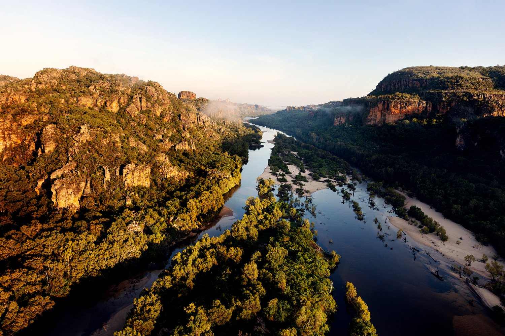

Our Mission
Our mission is to inspire and empower photographers to capture great moments. All while being environmentally friendly!
We are committed to producing high quality camera equipment made from sustainable and recycled materials that minimise our carbon footprint.
We strive to lead the industry in sustainable practices and showing the world how businesses can thrive while looking out for the environment.
We believe in preserving the worlds beauty. The best way to do that is through the lens of a camera. The next best way is to do it through sustainable business practices